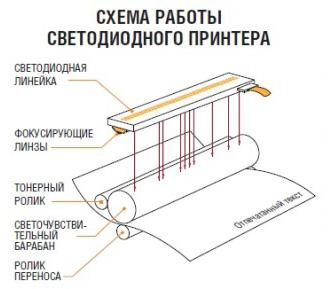

Принципиальное отличие светодиодного принтера от лазерного заключается в механизме освещения светочувствительного вала. В случае лазерной технологии это делается одним источником света (лазером), который с помощью сканирующей системы призм и зеркал пробегает по всей поверхности вала. В светодиодных же принтерах вместо лазера используется светодиодная линейка, расположенная вдоль всей поверхности вала. Количество светодиодов в линейке составляет от 2,5 до 10 тыс. штук, в зависимости от разрешения принтера.
Принцип работы светодиодных принтеров во многом схож с принципом работы лазерных. Работа принтера основана на принципе сухого электростатического переноса — источник света освещает поверхность светочувствительного вала (фотобарабана), воздействие света вызывает изменение заряда в освещённых частях фотобарабана, за счёт чего к ним притягивается порошкообразный тонер в количестве, зависящим от остаточного заряда на поверхности фотобарабана. Методы переноса тонера на барабан, на бумагу, и закрепления его в печке идентичны аналогичным методам, применяющимся в лазерной печати — вал прокатывается по бумаге, перенося на неё тонер, после чего бумага передаётся в устройство термического закрепления (печку), где за счёт высокой температуры и давления тонер закрепляется на бумаге.
